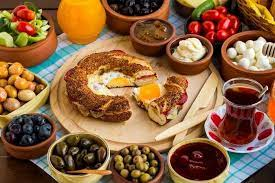
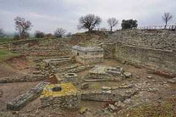
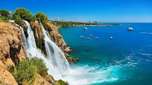
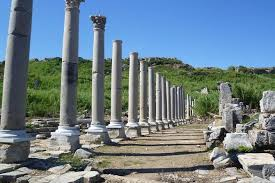
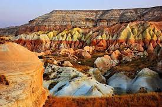

10-DAY TURKEY VISUALIZATION ITINERARY |
First thing first, take a flight to Istanbul from India or anywhere you are from.
Constantinople! I read in The Bible and also watched many documentaries on civilisations. The country basically is a living breathing ground for pre-historic and historic ruins. I for one would love to see them all so its gonna be pretty tough to decide what not to see. Be in 2 continents(Asia and Europe) at the same time.. ok, in 20 mins. We will be staying on the European side of Istanbul of course. Lots of street food awaiting! And walk, walk, walk. Leave as many footprints as we can.
|  |
 |

|
 |
Start early in the morning of day 3 maybe 5 or 6 AM. Explore Troy, Galipolli and Ephesus on the way {may skip all and go straight to Pamukkale to save time because more beautiful sights ahead starting Fathiye} Hold the night at Pamukkale. Explore Pamukkale in the morning, the sunrise at the thermal spa is definitely recommended.
|  |
Another road trip ♥. Recommemded to paraglide in Fathiye and Kas because of the ridiculously breathtaking views. But the question is, can I leave my eyes open while paragliding?üòÇ
Head to Fathiye, afternoon of day 4. 3:30 hrs drive, Visit the marvellous Oludeniz beach, meaning dead sea in Turkish.
Get some peace and quiet in the Butterfly Valley. Butterfly Valley is only reachable by boats that take off from Oludeniz
or hiking from the cliffs of Faralya.
Laze around or go Jump from the peak of Baba Dağ and fly over the lagoon. Walk around the abandoned village of Kayakoy. Visit the majestic ancient city of Kaunos, located in Dalyan, a one-hour car drive
away from Fethiye city centre. Hold the night here.
If time permits, take a mud bath on Iztuzu Beach, also home to the Sea Turtle Rescue Center (DEKAMER), a facility that helps injured turtles, as well as newborn sea turtles, reach the sea. Opens from 8 AM to 8 PM.
Quick exploring and head to antalya towards the evening and hold the night there.

|
Nestled in the South Mediterranean Sea. Turkish Resort city. Explore the night life on the 5th. Enjoy the whole 6th day like the locals. Don't miss out the picturesque huddle of cafes and restaurants overlooking the Mediterranean at the
old
Harbour/Roman Harbour.
The best part about Antalya is almost all major landmarks are within 1hr driving distance from the main Antalya town. These are few I've listed for my reference, I might skip all of it and just hang around the old town and marina cafes doing
nothing but soaking in the views and all the deliciousness Antalya can offer.
|  |
|  |
Do everything caves, balloons and valleys. Stay in local cave hostel. Take a hot air balloon, watch the balloons from cave cafe rooftops, visit balloon landing site. Explore the valleys, hike, go horse riding, most importantly, just lay back and enjoy the sunset, don't forget your flask and coffee pouch and some Turkish delights.
|  |
There is nothing much that interests me in Ankara as per the articles I found in google. It's the capital city of Turkey and deserves a one time visit and as we are planning to do this trip by road mostly, it will be a good place to lay over for a night and also tick it off our list and head back to Istanbul in the morning (about 6 hrs drive from Ankara)to catch the flight back home. While we are at it, we may go see Anitkabir, a historical museum. The building structure itself is beautiful and can be worth a visit. And, in general, food in any part of Turkey won't disappoint us for sure so we will definitely check out the market area to indulge in some street food.